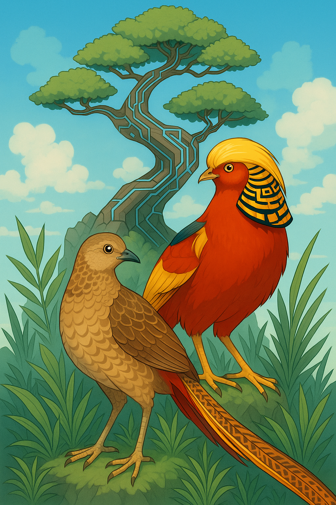

A Lifelong Connection to the Land
Welcome to Bent Cypress Homestead.
They say you can take the boy outta New Orleans, but you can’t take the New Orleans outta the boy. Well... you can try handing him a pair of muddy boots, a feed bucket, and a flock of curious pheasants. The first week I spent more time chasing the birds than feeding them — turns out Bourbon Street instincts don’t translate well to the chicken run. But here we are, a little older, a little wiser, and a lot more connected to the land.
Bent Cypress Homestead is all about family, balance, and building something real. We’ve fallen in love with raising exotic pheasants — from the shimmering Red Goldens to the quirky Melanistics — and in the process, we’ve also fallen in love with the idea of living closer to the earth. Our mission is to make the homestead as self-sustainable as we can: raising our own food, caring for the land, and passing that love of nature on to our kids (and to anyone who wants to come along for the ride).
We’re not experts — and we think that’s the best part. Every day brings something new to learn, and we want to share that journey with you. Whether you’re a seasoned homesteader, a curious bird lover, or just someone dreaming about a simpler life, pull up a chair (watch for the chicken poop), grab a cold drink, and join us. Let’s learn from each other and keep this homesteading adventure rolling.
this weeks blog

Springtime Chaos and Chicks: Managing the Madness on the Homestead
Spring on the homestead is a season of beauty, renewal, and — let’s be honest — total chaos. As the days get longer and the trees start to bud, incubators hum to life and brooder boxes start filling up with peeping balls of fluff. There’s nothing quite like the excitement of seeing new baby chicks hatching...